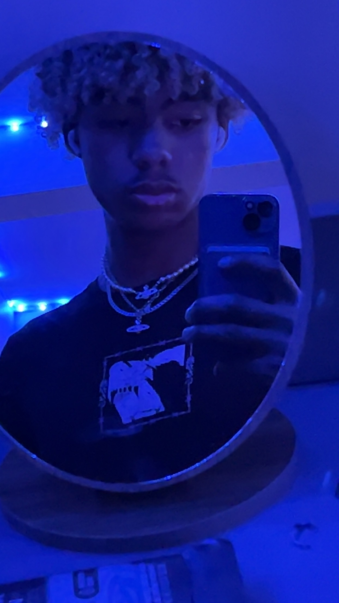

About Me
I am a 20 year old student in Interactive Media Design at Algonquin College. This is my 3rd year in college, as I am switching from Computer Engineering. My hobbies include music production and video games. I use software such as FL Studio to create music. My dream is to make it in the music industry, either as a performing artist or a producer, and inspire my fanbase and whoever else listens to my music. I take insipiration from artists such as lostrushi, i9bonsai and Lil Shine.
I used to play the flute and piano, but find it hard to do so without bothering my roommates, so I gave up on those. I do want to learn guitar, both acoustic and electric. The sounds and melodies they can create are really nice, and they are super versitile instruments. I've also always wanted to play drums, but my parents wouldn't buy me or let me buy a drum kit as it was too loud. My computer lets me do that all in my headphones without bothering anybody.